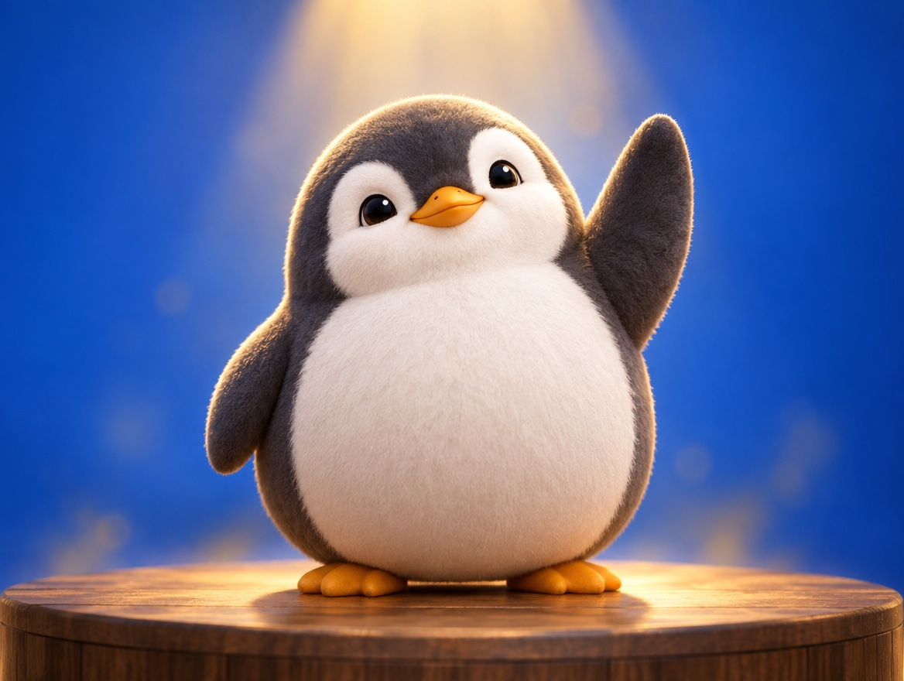

🧪 LAB · 試作 — AIが読書メモから一気に作った記事です。本番の一覧には出していません · 試作の一覧
🐧 EVERYDAY LIFE⚡ 45 SEC
Change passive words into "I do it" words, and you will feel stronger 🎬

Sound Familiar
If people laugh and you think "They laughed at me," you feel a little down, right?
Even for the same event, just changing your words into the "I do it" form changes your feeling.
The Point
For example, try changing "They laughed at me" into "I made them laugh."
The Reason
With passive words, you become "the person something was done to."
With "I do it" words, you become "the person who did something," so you are the main character.
⚡ TRY IT
Who is the main character?
Same thing happens. Pick the words. Watch the penguin on stage.
ROUND 1 / 4
😆 You tripped, and everyone laughed.
🎤 It is your turn to sing at karaoke.
⏳ You have to wait 30 minutes.
🏫 The teacher calls your name in class.
🌟 The spotlight is on you!
🌧️ You got a little smaller…
🌟 Main character words: 0 / 4
👑 You are the star of your own story!
🙂 Almost! Same events, but your words can lead.
🌧️ Try again. Say it like you are the main character!
More Examples
"Everyone will look at me" can also be changed into "I will show everyone."
"I was made to wait" can be changed into "I got some free time."
Try This
When you think "it was done to me," try saying it in the "I did it" form.
In Short
The event is the same, but one word can make you feel stronger.
📚 I wrote this from my reading notes.